Hello, I'm Dr Nwogu(MBBS,DRCOG).Welcome to my website.Below are diagnostic and treatment guidelines collated from several relevant sources.
It is your responsibility to correlate the resources here with your local Trust/regional guidelines, and ensure you are using the most up to date guidelines.
Menopause/HRT(Hormone Replacement Therapy) Guideline

Menopause/HRT(Hormone Replacement Therapy) Guideline

Antibiotic/Antimicrobial Guidelines

Management of Diverticular Disease

Assessments of Fits/Funny Turns in Children

Management of Polymyalgia Rheumatica

Gout Management

Longterm Gout Management

Sick Day Rule for Adrenal Patients

Sick Day Rule for Adrenal Patients(Preventing Addisonian Crisis)

Adult Steroid Card

Paediatric Steroid Card

Acne Management

More on Acne Management

p>
Acne Mgt(Wessex NHS)

Adult Asthma Management

Paediatric Asthma Management

Asthma Diagnostic Algorithm

Asthma Inhaler Formulations

Management of Acute Asthma in Children

Management of Acute Asthma in Adults

Diagnosis of Cystic Fibrosis

Hypertension Diagnosis

Hypertension Management

COPD Management

Management of Adrenal Crisis(Addisonian Crisis)

QRISK 3 Parameters
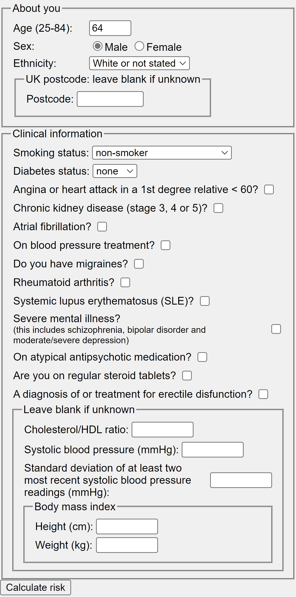
QRISK 3 Calculator
HRT Options

HRT Decision Aid

More on HRT/Menopause

Progestogenic Effects of Several progestogens

Hyperthyroidism Treatment Algorithm

Management of Primary Hypothyroidism

Management of Hypothyroidism in Pregnancy

Management of Subclinical Hypothyroidism

UKMEC For Contraception Choices

Chronic Heart Failure Diagnosis

Causes of Falsely Raised or Low NT-ProBNP

Chronic Heart Failure Management

Emergency Contraception Algorithm

More on Emergency Contraception

More on Emergency Contraception Options

Cow Milk Protein Allergy Algorithm

More on cow milk protein Allergy https://gpifn.org.uk/imap/

And More on cow milk protein Allergy https://gpifn.org.uk/imap/

Bedwetting(Enuresis) In Children
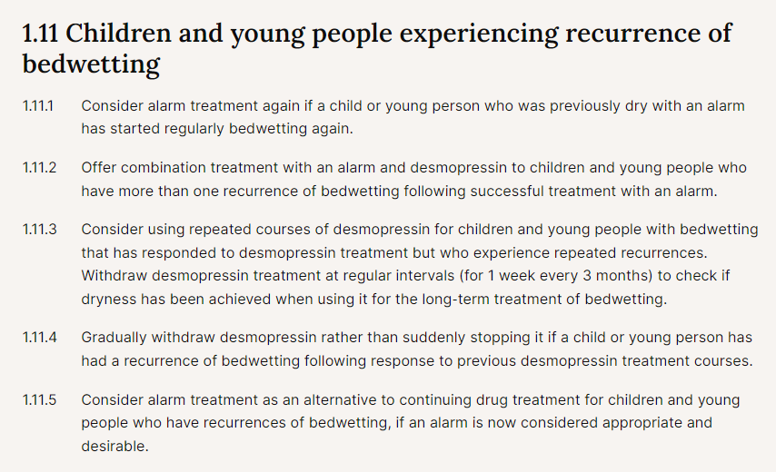
More on Bedwetting(Enuresis) In Children

Assessment and Management of Precocious Puberty

More on Assessment and Management of Precocious Puberty

Diabetic Review Template

Diabetes: Choosing First Line Treatment

Diabetes: Choosing Further Treatment

More on Diabetes Mellitus Management

Diabetes: Treatment Targets(Target HbA1C)

Diabetic Drugs


Glycaemic Index of Foods(Diabetes Management)

Glycaemic Index of Fruits(Diabetes Management)

Glycaemic Index of Vegetables(Diabetes Management)

Management of Rosacea

Management of Reflux in Formula-Fed Babies

Management of Reflux in Breast fed Babies

More on Reflux in Babies

Lab Diagnosis of Lyme Disease

Centor Scoring For Pharyngitis
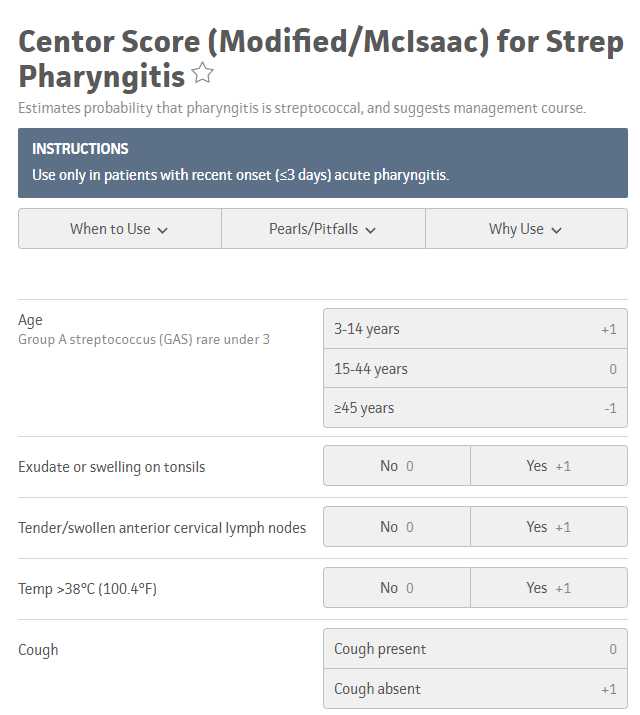
FEVERPAIN Scoring For Pharyngitis
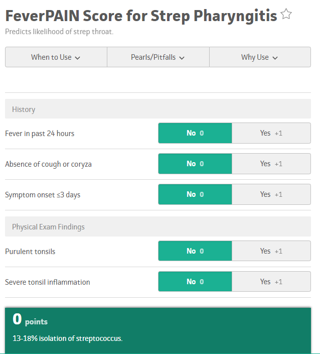
Paediatric Traffic Light(Assessment of an Unwell Child)

Bronchiolitis/Lower Respiratory Tract Infection Management Flowchart

Bronchiolitis/Lower Respiratory Tract Infection Management Flowchart
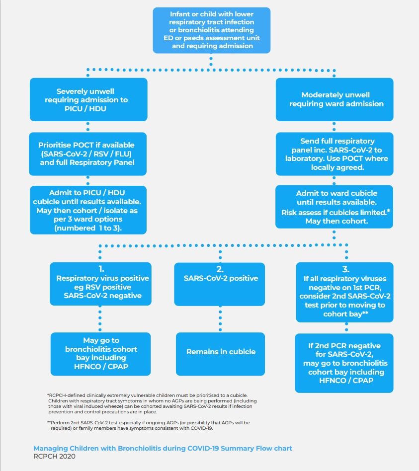
Referral Criteria for Tonsillectomy

Anaphylaxis Treatment Before/During Hospital Transfer
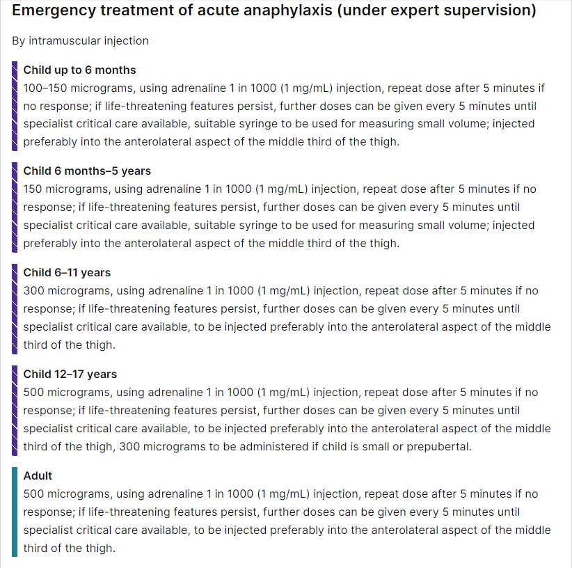
Adrenaline/Epinephrine Dosing in Anaphylaxis

Assessment of Urticaria/Angioedema

Management of Urticaria/Angioedema

Management of an Isolated Acute Angioedema

Pharmalgen for the Management(Desensitization) of Bee/Wasp Venom Allergy

ABCD2 Score for Stroke/TIA
 ABCD2 Score Calculator
ABCD2 Score Calculator
Treament of Suspected Meningococcal Meningitis Before/During Hospital Transfer
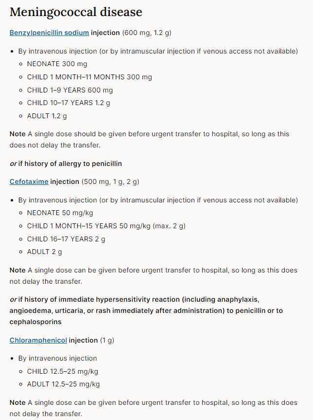
Treatment of Unstable Angina(Crescendo Angina)/NSTEMI(Myocardial Infarction) before/During Hospital Transfer

Treatment of STEMI((Myocardial Infarction)) before/During Hospital Transfer
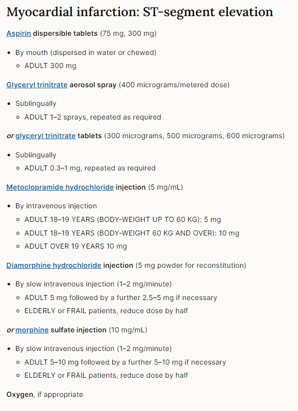
Treatment of Seizure before/During Hospital Transfer
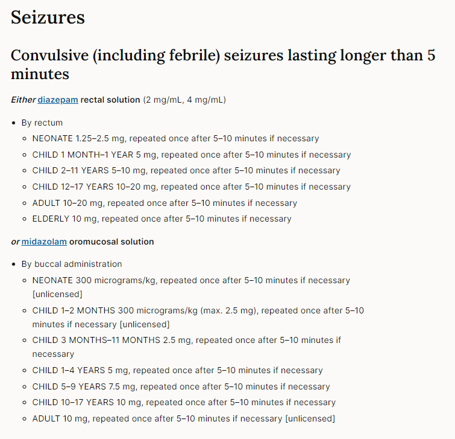
Treatment of Croup before/During Hospital Transfer. Oral Prednisolone is an Alternative
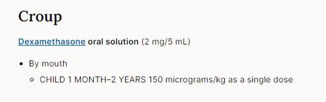
Treatment of Hypoglycaemia before/During Hospital Transfer
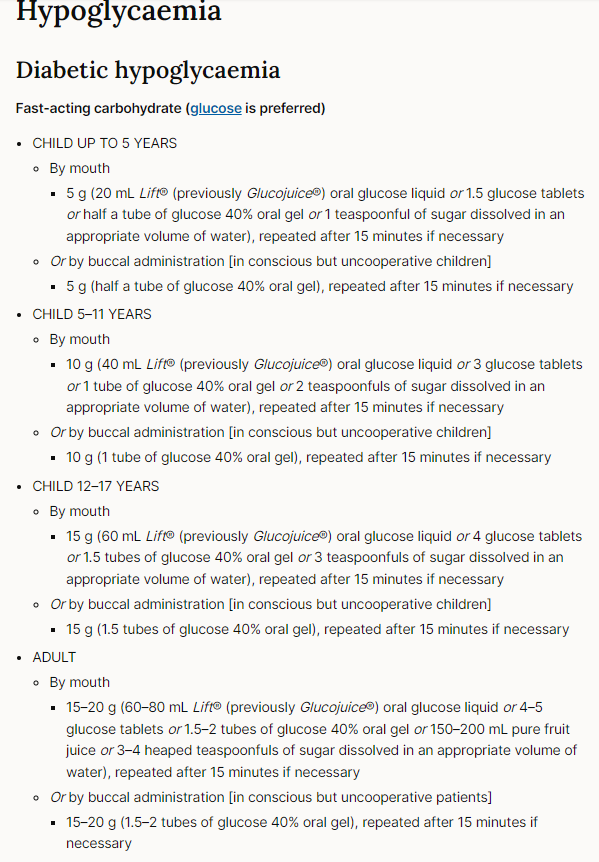

Contraindications to Sildenafil(Phosphodiesterase-5 Inhibitors) Use

Assessment and Management of Stable Angina

More on Management of Stable Angina

Just In Case Medications For Palliative Care

Care of The Dying Patient

Adult psoriasis Management Algorithm

Paediatric psoriasis Management Algorithm

Well Score for DVT
 DVT Wells Score Calculator
DVT Wells Score Calculator
Well Score for Pulmonary Embolism
 PE Wells Score Calculator
PE Wells Score Calculator
2WW Referral Criteria for Suspected Bowel Cancer

qFIT(Quantitative Faecal Immunochemical Test)
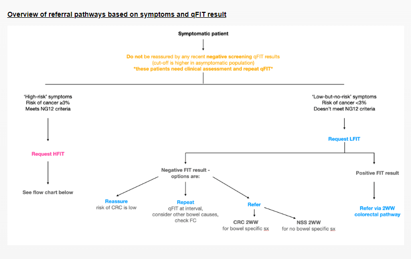
2WW Referral Criteria for Suspected Breast Cancer

2WW Referral Criteria for Suspected Lung Cancer

2WW Referral Criteria for Suspected Melanoma

2WW Referral Criteria for Suspected Haematological Cancers

2WW Referral Criteria for Suspected Gynaecological Cancers

2WW Referral Criteria to Neurology Service

Ottawa Rule for Knee Injury-Deciding whether to xray or not

Ottawa Rule for Ankle Injury-Deciding whether to xray or not

Head and Cervical Spine Injury Decision Aid

Primary and Secondary Fracture Prevention(Osteoporosis)

FRAX Score for Predicting Risk of Osteoporosis and Fragility Fractures
 FRAX Score Calculator
FRAX Score Calculator
NOGG Interpretation of FRAX Scoring(Osteoporosis)

Acute Headache Flowchart

Headache Assessment and Management

Migraine Management Algorithm---Headache
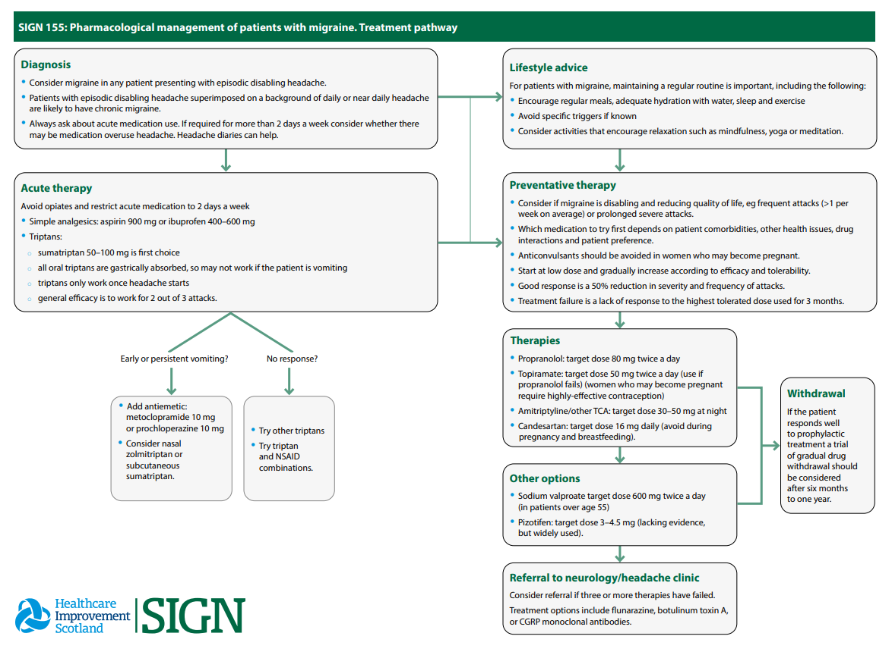
Trigeminal Neuralgia Management Options---Headache

PMR(Polymyalgia Rheumatica) Assessment

PMR(Polymyalgia Rheumatica) Treatment

Treatment of Ulcerative Colitis Flare

Depression Matched-Care Model

Management of Acute Alcohol Withdrawal(Alcohol Detox)

Guide to Alcohol Units

SADQ(Severity of Alcohol Dependence Questionnaire)
 SADQ Calculator
SADQ Calculator
AUDIT-C(Alcohol Use Disorders Identification Test Consumption)
 AUDIT C Calculator
AUDIT C Calculator
Paracetamol Overdose

Red Flags in Paediatric Headache

Red Flags in Adult Headache


Assessment and Management of Suspected GCA(Giant Cell Arteritis)/ Temporal Arteritis

IBS Diagnostic Flowchart

IBS Management Flowchart

Opioid Conversion Ratios(Morphine)--NICE CKS

Back Pain Red Flags

Management of Acute Back Pain/Sciatica

Diagnostic Criteria for Axial Spondyloarthritis/Ankylosing Spondyloarthritis
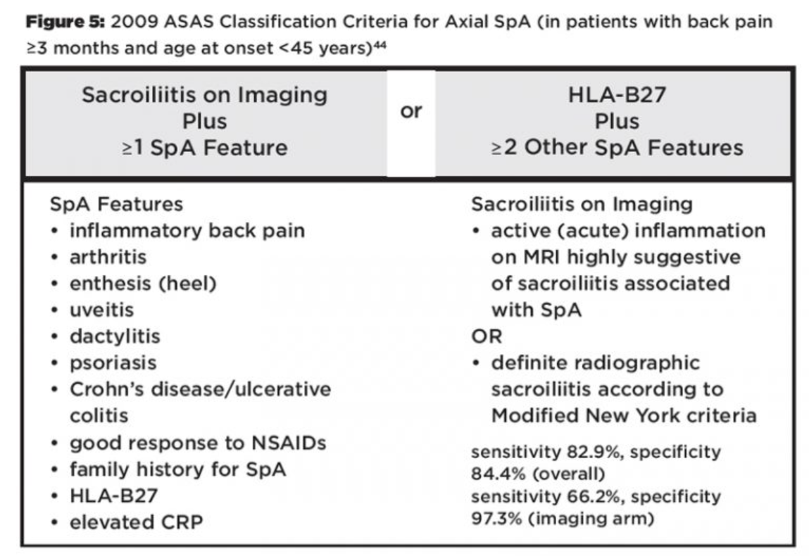
Diagnostic Criteria for SLE(Lupus)
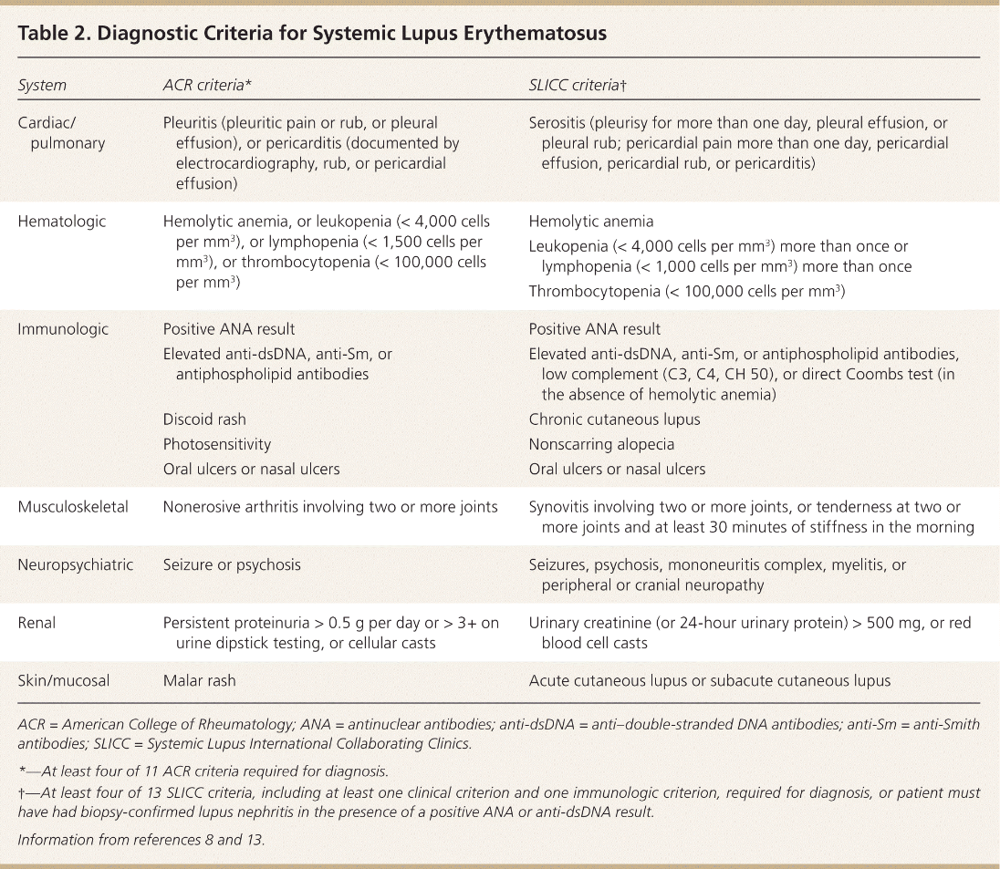
Chronic Pain Management

Indications For Genetic Referral(Breast Cancer)

Neonatal Blood Spot Tests

Indications For Referral In CKD(Nephrology Referral)

Abnormal LFT Decicions

When to repeat bloods in Abnormal LFTs

Isolated Raised Conjugated Bilirubin(Dubin-Johnson Syndrome)

Familial Hypercholesterolaemia Referral


Cough Red Flags

Treatment of Shingles(Herpes Zoster)

Constipation Red Flags in Children

Treatment of UTI in Children

Referral Criteria for UTI in Children

Dementia Care Pathway

Informant Questionnaire on Cognitive Decline in the Elderly (IQCODE)--Dementia
 IQCODE Calculator
IQCODE Calculator
6-CIT(Cognitive Impairment Test)--Dementia
 6-CIT Calculator
6-CIT Calculator
GPCOG(GP Assessment of Cognition)--Dementia
 GPCOG Calculator
GPCOG Calculator
Dementia Management

Non-Alzheimer Dementia-Pharmacology

Side Effects of Dementia Medications

Referral Criteria in PID(Pelvic Inflammatory Disease)

ABPI(Ankle Brachial Pulse Index)

Treatment of Thrush(Vaginal Candidiasis) in Pregnancy

Varicella(Chicken pox) Exposure in Pregnancy

Antibiotic Prescribing in Sore Throat

More on Antibiotic Prescribing in Sore Throat

UK Immunisation Schedule

ADHD Assessment

Differential Diagnoses of Childhood Behavioural Problems

Red Flags of Childhood Behavioural Problems

Management of Childhood Behavioural Problems

Cervical Smear(Pap smear) Flowchart

Abnormal Pap smear Flowchart(Colposcopy)

Managing Abnormal Colposcopy

Monitoring Requirements For Terbinafine

Fungal Nail Infection Management

Management of Insomnia

Sleep Hygiene

Atrial Fibrillation: Assessment and Management

CHA2-DS2-VASc(Thrombosis Risk) and HASBLED(Bleeding Risk) Scoring in Atrial Fibrillation Management
 CHA2-DS2-VASc Score Calculator
HASBLED Calculator
CHA2-DS2-VASc Score Calculator
HASBLED Calculator
ORBIT Scoring(Bleeding Risk) in Atrial Fibrillation Management.Recommended by NICE.
 ORBIT Calculator
ORBIT Calculator
Atrial Fibrillation Management

Atrial Fibrillation Management-Flowchart

Weight Management: Tier 2 and Tier 3 Referrals

Suspected DVT Treatment Flowchart

Suspected PE Treatment Flowchart

DVT/PE Anticoagulation
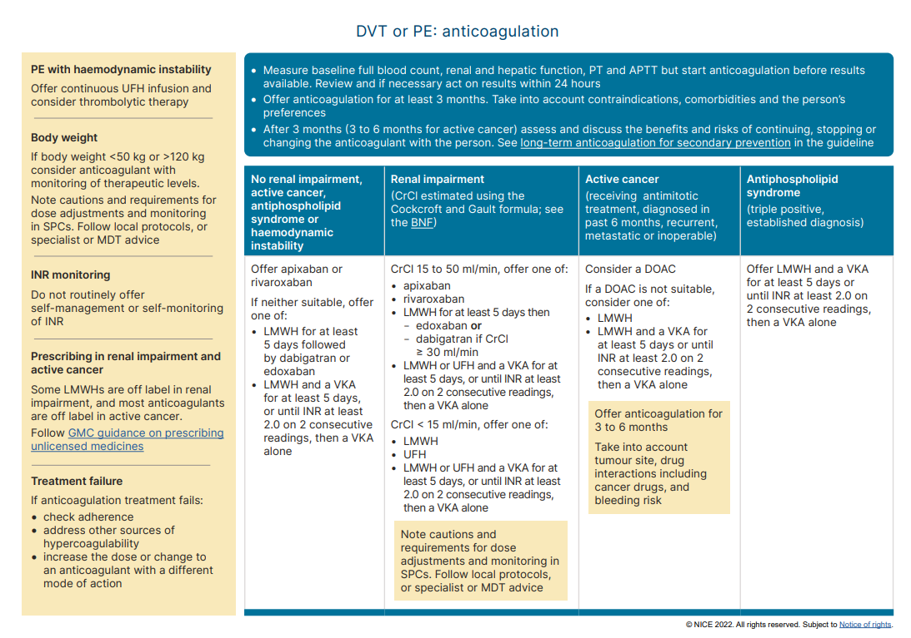
Multiple Sclerosis McDonald Diagnostic Criteria

Multiple Sclerosis

Multiple Sclerosis

Multiple Sclerosis Pathophysiology

Multiple Sclerosis Management Flowchart

Causes of Pruritus ani

Treatment of Pruritus ani

Management of Epicondylitis(Tennis and Golfer Elbow)
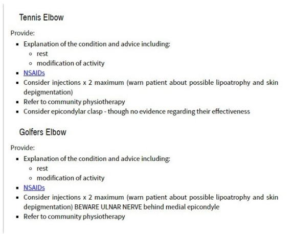
Epworth Sleepiness Scale For Sleep Apnoea Assessment
 Epworth Sleepiness Score Calculator
Epworth Sleepiness Score Calculator
Berlin Questionnaire For Sleep Apnoea Assessment
 Berlin Questionnaire Calculator
Berlin Questionnaire Calculator
CFS(Chronic Fatigue Syndrome: Assessment)

CFS(Chronic Fatigue Syndrome: Management)
CFS(Chronic Fatigue Syndrome) Exclusion Criteria

Terbinafine Monitoring
Tinnitus Management

Tinnitus Referral Criteria

Tinnitus Red flags

HINTS(Vertigo/Dizziness/Nystagmus Assessment)
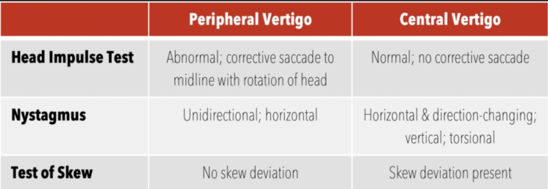
Watch this video on how to perform the HINTS test
Hearing loss Referral Criteria

Treatment of Heavy Menstrual Bleeding(Menorrhagia)

p>
Heavy Menstrual Bleeding(Menorrhagia): Investigations

p>
Delaying/Postponing Menstruation

Dyspepsia/Acid Reflux/GORD/Peptic Ulcer Management Algorithms

Erectile Dysfunction Assessment

Erectile Dysfunction Investigation

Erectile Dysfunction Treatment

Erectile Dysfunction Treatment(Medications)

More on Erectile Dysfunction Prescribing--NICE CKS

Carpal Tunnel Syndrome(CTS) Treatment

Carpal Tunnel Syndrome(CTS) Referral

Stroke/TIA(Transient Ischaemic Attack) Management Algorithm

Secondary Stroke/TIA(Transient Ischaemic Attack) prevention

Gynaecomastia Assessment

Gynaecomastia Referral Criteria

Dupuytren Contracture: Assessment

Dupuytren Contracture: Treatment

Dupuytren Contracture: Referral Criteria

Raynauds Phenomenon: Assessment

Raynauds Phenomenon: Treatment

Raynauds Referral Criteria

Treatment of Varicose Veins

OSA(obstructive sleep apnoea) Assessment

OSA(obstructive sleep apnoea) Referral

Hirsutism Treatment

Intermenstrual Bleeding: Causes

Intermenstrual Bleeding: Treatment

Cervical Smear as Assessment of Abnormal Uterine Bleeding

Colposcopy Referral

Falls Assessment

Causes of Restless Leg Syndrome

Treatment of Restless Leg Syndrome

Aetiology of Plantar Fasciitis

Treatment of Plantar Fasciitis

Relative Risk of VTE with several CHC-contraception

Missed POP(Progesterone Only Contraceptive Pill)

Missed CHC(Combined Hormonal Contraception)

CHC Options(Combined Hormonal Contraception)

Breast Cancer Risk Factors

Statin Monitoring/Cholesterol

Indications for Statin Initiation/QRISK/Cholesterol

Baseline Lipid Measurement

Suspected Testicular Torsion Management

Suspected Epididymo-orchitis Assessment

Suspected Testicular Torsion Assessment

Red Flags in Chronic Sinusitis

Referral Criteria in Chronic Sinusitis

Pharmacologic Management of Constipation in Children

Smoking Cessation Guidelines


Topical Steroid Preparations

FTU(Finger Tip Units) for Topical Steroid Application

Asthma/COPD Inhaler Formulations

Chronic Asthma Management in Adults

Spacer Devices for Inhalers
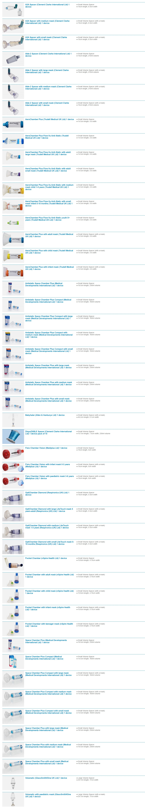
Guide to Prescribing in Parkinson's Disease

Management of Postural(Orthostatic) Hypotension

Management of Opioid Dependence

Management of Opioid Dependence/Opioid Substitution Therapy


Drugs Used in Managing Obesity(Weight Management)

Epistaxis/Nose Bleed Management

Switching Antidepressants

More on Switching and Stopping Antidepressants

Antidepressants Side Effects

Assessment of Eating Disorder(Anorexia/Bulimia/Binge Eating)--NICE CKS

Clinical Features of Eating Disorders(Anorexia/Bulimia/Binge Eating)--NICE CKS

Management of Eating Disorder(Anorexia/Bulimia/Binge Eating)--NICE CKS

Red Flags In Gallstone/Cholelithiasis Assessment

When to Refer in Suspected IBD(Inflammatory Bowel Disease)

Managing Crohn's disease(IBD) in Primary Care

Managing Ulcerative Colitis(IBD) in Primary Care

Assessment of Red Eye: Flowchart

Serotonin Syndrome Assessment

Serotonin Syndrome Diagnosis and Management

Neuroleptic Malignant Syndrome Diagnosis and Management

Scabies Treatment


Traumatic Tympanic Membrane Perforation

Traumatic Tympanic Membrane Perforation

Assessment and Management of MGUS(Monoclonal Gammopathy of Undetermined Significance)
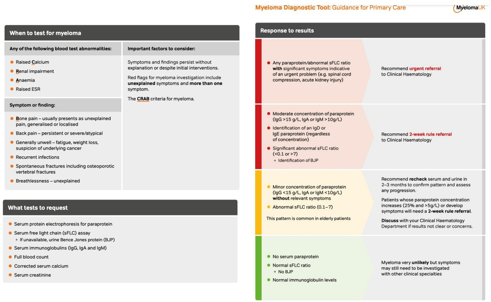
MGUS(Monoclonal Gammopathy of Undetermined Significance) Assessment Flowchart

Risk of Progression of MGUS(Monoclonal Gammopathy of Undetermined Significance) to Myeloma

Referral Criteria for MGUS(Monoclonal Gammopathy of Undetermined Significance)

Multiple Joint Pain(Polyarthralgia) Assessment

Referral Criteria for Multiple Joint Pain(Polyarthralgia)

Hypokalaemia Assessment

Hypokalaemia Management

Hyperkalaemia Assessment and Management

CURB-65(Pneumonia/Chest Infection) Risk Stratification
 CURB-65 Score Calculator
CURB-65 Score Calculator
Management of Bell's Palsy

Mental Health/Psychiatric Medications in Maternity(Pregnancy and Breastfeeding)

COPD Annual Review Template

Asthma Action Plan

Asthma Review Template

Follow this link to access more relevant information on the AKT.
Video on AKT Insights
Follow this link to access more relevant information on the DRCOG Exam Preparation
Video on DRCOG Insights
Back to top
Disclaimer: The guidelines on this website are culled from already existing diagnostic and treatment guidelines.This is solely for clinical and educational purposes,especially for the purpose of quick referencing during consultations.